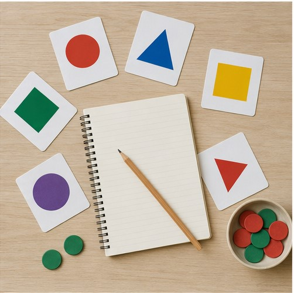

정답부터 찾으려고 합니다
말하기 전에 문법적으로 완벽한 문장을 만들려다 대화 타이밍을 놓칩니다. 왕초보 단계에서는 짧고 분명한 문장으로 먼저 반응하는 연습이 필요합니다.
처음부터 긴 문장을 만들 필요는 없습니다. 자주 쓰는 짧은 반응을 익히고, 기본 문장 틀에 내 이야기를 넣고, 실제 대화 속에서 반복하는 순서가 중요합니다.
완벽한 문장보다
직접 한마디를 꺼내는 경험부터 시작합니다.
단어와 문법을 몰라서만은 아닙니다. 알고 있는 표현을 대화 속에서 꺼내는 연습이 부족하면 영어가 머릿속에서만 맴돌게 됩니다.
말하기 전에 문법적으로 완벽한 문장을 만들려다 대화 타이밍을 놓칩니다. 왕초보 단계에서는 짧고 분명한 문장으로 먼저 반응하는 연습이 필요합니다.
표현을 눈으로 이해했더라도 소리로 듣고 따라 말하지 않으면 실제 대화에서 알아듣기 어렵습니다. 듣고, 따라 하고, 바꿔 말하는 과정이 연결되어야 합니다.
너무 어려운 주제와 속도로 시작하면 침묵하는 시간이 늘어납니다. 지금 만들 수 있는 문장에서 한 단계만 확장하는 수업이 부담을 낮춥니다.
눈으로만 외우지 않고 실제 수업 장면과 쉬운 학습 자료를 활용해 한마디씩 말하는 범위를 넓힙니다.

질문을 단순하게 바꾸고 필요한 단어를 제시해 내 답변을 끝까지 완성하도록 돕습니다.
교정된 문장을 다시 소리 내어 말하고 비슷한 상황에 적용해 내 표현으로 만듭니다.
진단 결과를 바탕으로 지금 가능한 문장보다 딱 한 단계 높은 표현부터 연습합니다.
암기한 지식보다 실제로 듣고 말할 수 있는 범위를 봅니다.
자주 쓰는 문장 틀에 내 정보와 경험을 넣습니다.
일상적인 질문과 역할극에서 표현을 반복합니다.
틀린 표현을 다시 말하고 다음 수업 전에 짧게 복습합니다.
현재 가능한 범위를 먼저 확인한 뒤 소리와 기본 표현부터 단계적으로 시작할 수 있습니다. 모든 수강생이 같은 출발점에서 시작하지는 않습니다.
질문을 더 짧게 바꾸고, 화면 자료나 예시를 활용하며, 필요한 표현을 먼저 제시할 수 있습니다. 중요한 것은 이해 가능한 범위에서 대화를 이어가는 것입니다.
기초 문법은 필요하지만 회화를 모두 미룰 필요는 없습니다. 말하는 과정에서 필요한 문장 구조를 배우고 바로 사용하면 기억과 활용을 함께 높일 수 있습니다.
한 번에 오래 공부하기보다 수업에서 배운 표현을 짧게라도 자주 소리 내어 반복하는 것이 좋습니다. 개인 일정에 맞는 학습 빈도는 상담에서 함께 확인합니다.
기초 문장을 익힌 뒤 공항, 숙소, 카페, 면접 등 목표 상황에 필요한 표현과 역할극으로 확장할 수 있습니다.